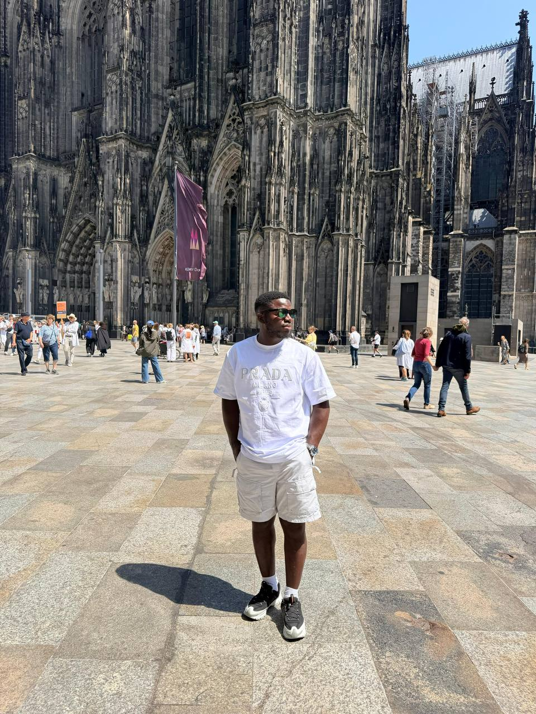

Transformer les idées
en systèmes clairs.
Je suis GOK ABAH Armel Rodrigue, futur bachelier en Informatique de Gestion passionné par l'ingénierie logicielle, l'architecture de bases de données, l'analyse réseau et le design d'interfaces fonctionnelles & élégantes (UI/UX).

02 / stack technique & savoir-faire
Compétences en pratique.
Un socle solide combinant rigueur algorithmique, structuration des données, protocoles réseaux et sensibilité ergonomique.
03 / réalisations & travaux pratiques
Projets qui prennent forme.
Des applications concrètes où l'analyse des besoins métiers se traduit en architectures logicielles fiables.
04 / métriques & synthèse
Quelques chiffres significatifs.
Vue synthétique et chiffrée de mes acquis académiques et projets menés.
05 / connexion directe
Travaillons ensemble.
Disponible pour des stages, projets de développement d'applications de gestion, intégrations de bases de données ou opportunités professionnelles.
Discuter en direct
Cliquez pour lancer instantanément une discussion WhatsApp préremplie ou composez directement le numéro.
Dépôt GitHub
Accédez à mes codes sources Java, modélisations SQL et travaux académiques documentés.
github.com/armelgokabah-art ↗Liège • ITLG
Institut Technique de Grâce-Hollogne — Section Informatique de Gestion.